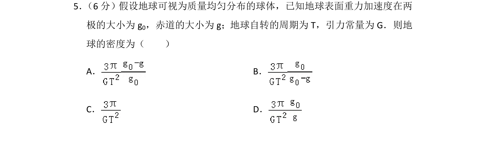
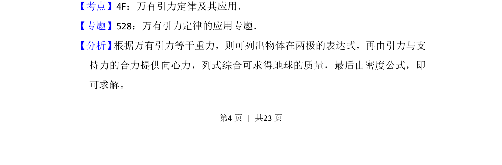
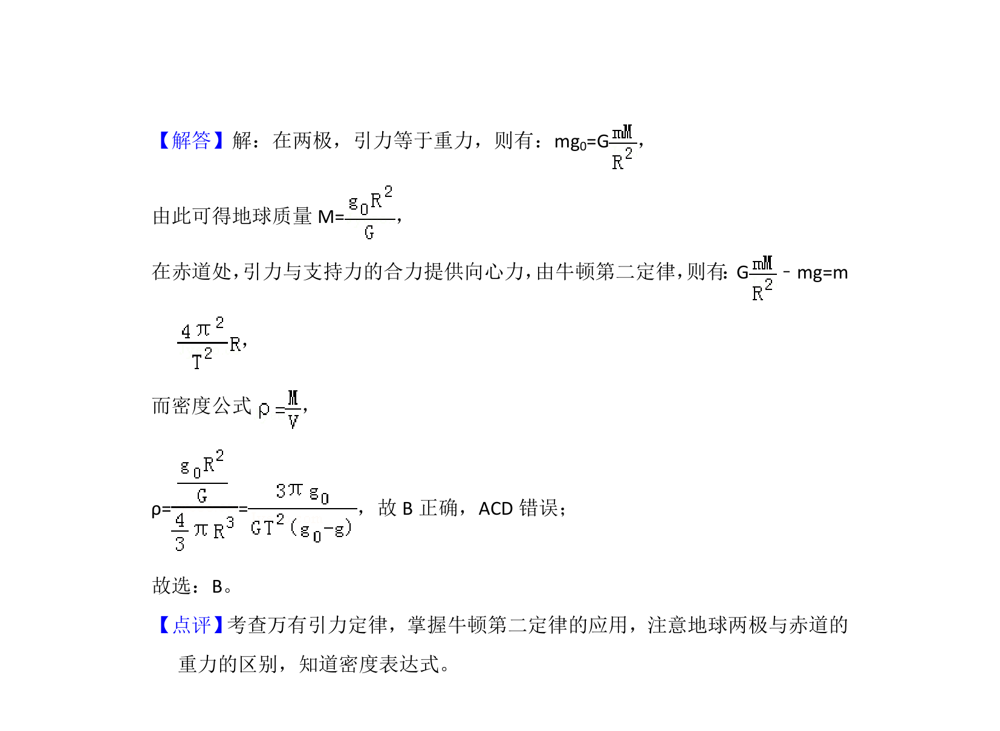

考点：万有引力定律 向心力 密度

该题利用地球两极和赤道重力加速度差异，结合自转周期和引力常量求地球密度。


📄 原 PDF 第 4 页：
素材/真题/吉林/2008-2024·（吉林）物理高考真题/2014年高考物理试卷（新课标Ⅱ）（解析卷）.pdf
5． （6分）假设地球可视为质量均匀分布的球体，已知地球表面重力加速度在两 极的大小为g 0，赤道的大小为g；地球自转的周期为T，引力常量为G．则地 球的密度为（ ） A．B． C．D．
【考点】4F：万有引力定律及其应用．菁优网版权所有 【专题】528：万有引力定律的应用专题． 【分析】 根据万有引力等于重力，则可列出物体在两极的表达式，再由引力与支 持力的合力提供向心力，列式综合可求得地球的质量，最后由密度公式，即 可求解。